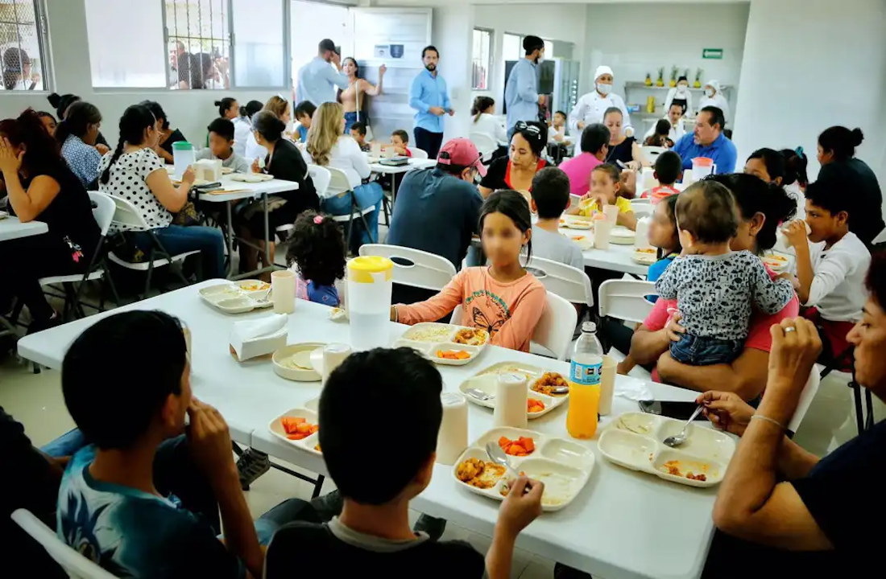
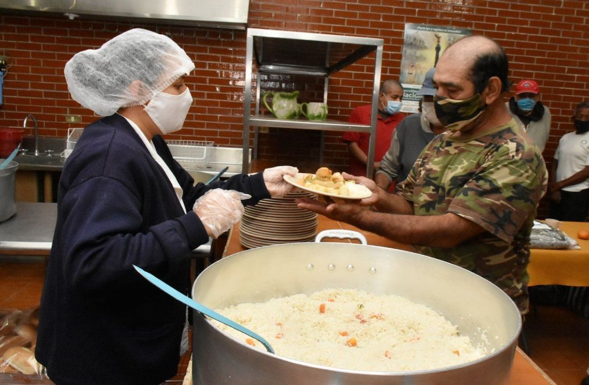

Nuestros comedores en Buenos Aires
Los comedores de Hambre Cero están diselados para llegar a todos los rincones de Buenos Aires. Desde comedores de niños y érsonas mayores hasta familias compeltas. Los comedores estan diseñados para garantizar que, sin important cuán joven o mayor sea, nadie se quede sin comida.

Mesa para todos

Rincón solidario
